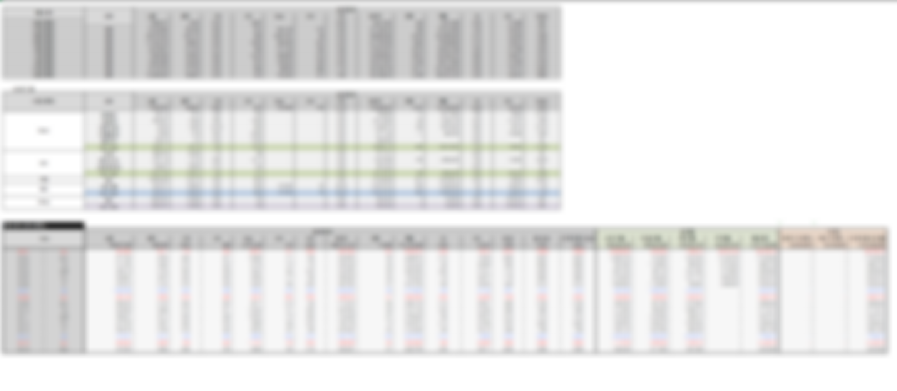
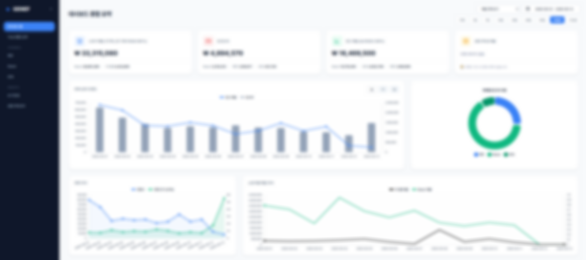

단순한 실행을 넘어, 데이터를 지휘하고 자동화하여
'진짜 문제'를 해결하는 데 집중합니다.
질문만 던지면 AI가 인사이트를 도출하는 시대에, 마케터의 역할은 기술을 실무에 얼마나 효과적으로 녹여내는지에 달려 있다고 생각합니다. 저는 퍼포먼스 마케팅의 기본기와 더불어 자동화 툴을 활용해 업무 효율을 높이며 성장해왔습니다.
어려운 문제를 끝내 해결하며 얻는 성취감이 제게는 가장 큰 동기부여입니다. 모두닥의 치열한 환경 속에서 2026년 목표 매출 300억 달성에 보탬이 되는 일원으로 성장하겠습니다.
채널별 데이터를 분석하던 중, 스마트스토어는 '샴푸' 위주로 판매되고, 자사몰은 '트리트먼트' 병행 구매 비율이 높다는 뚜렷한 행동 패턴을 발견했습니다.
이를 바탕으로 "샴푸에 만족한 고객이 자사몰로 유입되어 트리트먼트를 추가 구매할 것"이라는 가설을 세웠습니다. 스마트스토어 구매 고객의 특징을 분석하여 유사 타겟을 설정하고 가설 검증 캠페인을 실행한 결과, 목표였던 ROAS 206%를 달성하는 성과를 거두었습니다.
현재 저는 기존에 구축해 둔 '데이터 자동화 웹 대시보드'의 초기 로딩 속도를 개선하기 위해, 백엔드 서버를 직접 공부하며 구축하는 프로젝트에 매달리고 있습니다. 과거 엑셀 리포트를 웹 전환하여 실시간 데이터 시각화에는 성공했지만, 방대한 구글 시트 데이터를 프론트엔드 단에서 처리하다 보니 데이터가 누적될수록 로딩 지연 현상이 발생했습니다.
'마케터로서 이 정도면 충분하지 않을까' 스스로 타협할 수도 있었습니다. 하지만 데이터 확인의 직관성과 속도는 대시보드를 사용하는 분들에게 가장 중요한 경험이기에, 이를 방치하고 싶지 않았습니다.
비록 직무 경계를 넘어서는 낯선 영역일지라도, 문제의 본질을 파악하고 기술적인 해결책을 찾아 부딪혀보는 저의 끈기는 헬스케어 정보의 비대칭성을 해결해 나가는 모두닥의 비전과 잘 어울린다고 생각합니다.
"리소스와 시간 부족으로 새로운 대시보드 도입은 현실적으로 어렵습니다."
대행사에서 근무하며, 인사이트 파악이 힘든 엑셀 리포트를 개선하고자 대시보드 개편안을 기획했지만, 새로운 시스템을 도입할 리소스가 부족하다는 팀장님의 회의적인 피드백에 부딪혔습니다.
하지만 이를 포기하지 않고, 퇴근 후 개인 시간을 투자하여 AI와 함께 데이터 구조화와 시각화를 진행. 실현 가능한 수준의 샘플(프로토타입)을 직접 구현해 냈습니다. 이후 대표님과 팀장님께 시연 자리를 요청하여, 이 시스템이 기존 리포트 작성에 들어가던 막대한 리소스를 얼마나 획기적으로 줄일 수 있는지 구체적으로 설명했습니다.
결과적으로 저의 실행력과 데이터 기반의 설득은 프로젝트 정식 진행이라는 승인을 이끌어냈습니다. 이를 바탕으로 팀 내 데이터 수집 및 시각화 전 과정을 자동화하는 시스템을 성공적으로 구축할 수 있었습니다.

단순 반복 업무를 자동화하여 확보한 10분의 시간을 A/B 테스트와 머신러닝 효율 극대화에 온전히 투자했습니다. Make.com 트리거 설정부터 네이버 API 서명(Signature) 인증까지 100% 자동화를 완수하기 위해 하루 3시간씩 3개월간 꾸준히 매달렸습니다.
직무의 경계를 넘어 마케터 본연의 고민에 집중한 결과, 담당 광고주의 ROAS를 47% 개선하는 유의미한 성과를 거두었습니다. 낯선 허들 앞에서도 끈기 있게 몰입하여 실무에 적용해 본 이 경험을 모두닥에서도 증명해 보이겠습니다.
